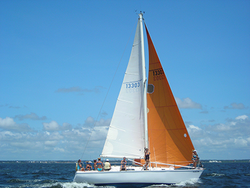
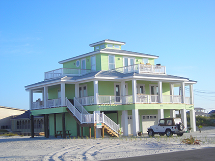
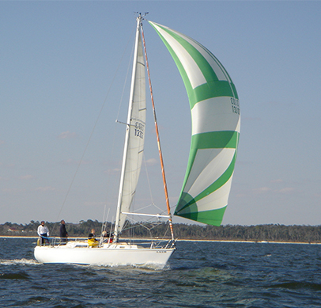
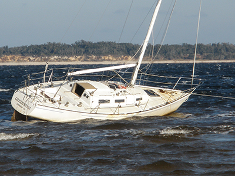
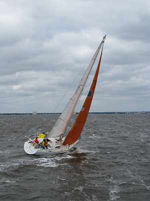
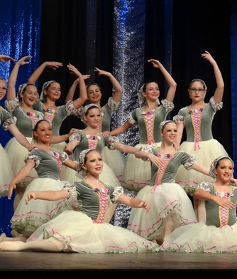
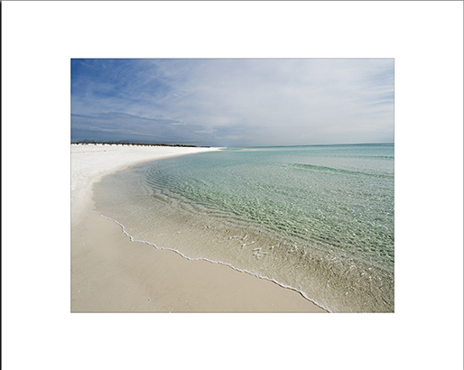
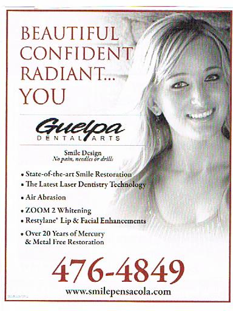

Friends of Headhunters
We love the outdoors - sailing, fishing, surfing, cycling, golf and more
We have assembled a helpful list of businesses and websites in the pensacola area.
Schurr Sails
We love our boat the "Reach-Around". Our boat is a Pearson 10m/33'. We race and have been using Schurr Sails as our sail maker. Please check out their website; it's filled with sailing links such as yacht clubs, weather, and other boat related links of interest.
Ed Rankin Builders
Ed and Kaye were the builders of our beautiful house on Pensacola Beach. We had lost our first beach house to hurricane "Ivan", now this is where we enjoy the beach life style with our twin boys Austin & Palmer.
G.Y.A.
We have been long standing members of both Pensacola Beach, where we live, and Pensacola Yacht Club as well. The yachting community has been great fun for us. On the Gulf Yachting Association's website you can access all the yacht clubs connected to GYA.
Zern Rigging
Saling and racing makes things break. Also if you have a boat made in 1978(!) things need fixing. In comes Rick Zern and his capable team of DJ & Dave, they have the talent and the skill to fix almost any rigging problem you may encounter. They are always willing to help call RZ today.
Murray Yacht Sales
If you are looking for a new boat, you know how compiling data and a good first hand knowledge of the desired vessel you seek is tough! Murray Yacht Sales is a licensed yacht broker company. Not only does the owner have a background in boat-rigging and sail-making, he can also help you get the yacht you desire.
US Sailing
If you are racing sailboats you have to be a member of this great organization. Their website contains a plethora of helpful information.
Michelle Lewis - ballet instructor
Michelle teaches ballet to children and adults of all ages at two different studios in the greater Pensacola area.
Michael Smith Photography

Guelpa Dental Arts